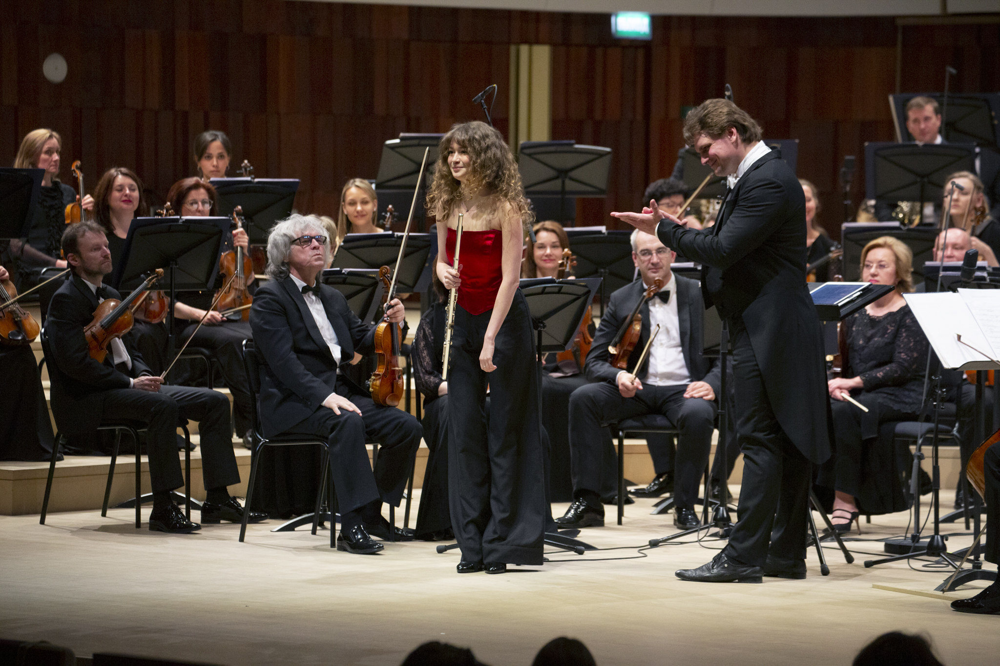

О себе
Екатерина Корнишина-Браунфельд — концертирующая флейтистка, живёт и работает в Европе. Выступает как солистка и камерный музыкант.
Выступает на международной сцене, сотрудничает с ведущими музыкантами и дирижёрами. Параллельно развивает собственные художественные проекты, записывает авторские программы и занимается преподаванием и коучингом в сфере сценического исполнения.

Биография
Ранние годы
Екатерина начала заниматься музыкой в возрасте четырёх лет и была участницей Детского хора Большого театра.
Образование
Затем она поступила в Центральную музыкальную школу при Московской государственной консерватории имени П. И. Чайковского, где обучалась в классе профессора Юрия Должикова, а позже продолжила образование в Московской государственной консерватории в классе профессора Александра Голышева.
Позднее она обучалась в Высшей школе музыки Королевы Софии в Мадриде в классе Жака Зуна.
Её художественное развитие также формировалось благодаря мастер-классам ведущих флейтистов, среди которых Эммануэль Паю, Феликс Ренггли, Филипп Бернольд, Софи Шеррье, Андреа Либеркнехт, Венсан Люка, Давиде Формизано и Сигэнори Кудо, а также мастер-классам по камерной музыке с Венцелем Фуксом (кларнет), Хансйоргом Шелленбергером (гобой), Александром Бондарянским (фортепиано) и Мартой Гульяш (фортепиано).
Начало карьеры
С одиннадцати лет Екатерина выступает как солистка на международных фестивалях.
В пятнадцать лет она дебютировала в венском Musikverein (Brahms-Saal), исполнив Концерт для флейты и арфы Моцарта.
С 2011 по 2016 год она была постоянной участницей Международной летней академии (ISA) Венской консерватории, а в 2019 году была выбрана для участия в Järvi Academy.
Оркестровая и международная деятельность
В восемнадцать лет по приглашению Владимира Спивакова она вошла в состав Национального филармонического оркестра России в качестве концертмейстера группы флейт.

Она также выступала в качестве приглашённого концертмейстера группы флейт с оркестрами по всей Европе.
Как солистка она выступала с такими коллективами, как Государственный академический симфонический оркестр России имени Е. Ф. Светланова, Национальный филармонический оркестр России, «Виртуозы Москвы» и Симфонический оркестр Татарстана.
Камерная музыка и сотрудничество
Как солистка Екатерина сотрудничала с такими дирижёрами, как Владимир Федосеев, Владимир Спиваков, Michel Repper, Antony Hermes и Александр Сладковский, а как камерный музыкант выступала с Андреем Барановым (скрипка), Bram van Sambeek (фагот), Борисом Андриановым (виолончель), Dwight Perry (гобой), Яогуаном Чжаем (кларнет), Петром Лаулом (фортепиано), Ильёй Грингольцем (скрипка), Никитой Борисоглебским (скрипка), Аркадием Шилклопером (валторна), Edgar Moreau (виолончель), Дмитрием Илларионовым (гитара) и Артёмом Дервоедом (гитара).
Записи и медиа
В 2014 году она записала Вторую оркестровую сюиту Иоганна Себастьяна Баха с Владимиром Спиваковым и оркестром «Виртуозы Москвы».
В 2020 году на лейбле «Мелодия» вышел альбом её собственных транскрипций произведений Сергея Рахманинова для флейты и фортепиано. После презентации на Radio France альбом вошёл в Top Chart.

Современная музыка
Екатерина также активно работает в сфере современной музыки. Ей посвящены произведения как признанных, так и молодых композиторов, среди которых Матиас Дюплесси, написавший для неё и гитариста Дмитрия Илларионова произведение Bird in the City, и Артём Ромоданов, создавший 6/3 для флейты и струнного квинтета.
Педагогика и исследования
Параллельно с исполнительской деятельностью Екатерина получила квалификацию в области консультативной психологии, защитив дипломную работу на тему «Влияние массовой культуры на бессознательную регуляцию поведения человека».

Она является основателем BusyMozart — международного образовательного проекта, объединяющего участников более чем из 36 стран и интегрирующего методы спортивной психологии в музыкальное обучение.
Как педагог Екатерина готовит студентов к поступлению в ведущие консерватории, уделяя особое внимание художественной самостоятельности, креативности и уверенности на сцене.
В 2025 году, в рамках 20-летия Stellenbosch Chamber Music Festival (Южная Африка), она передала фагот молодому местному студенту совместно с директором фестиваля Ниной Шуман.
Текущая деятельность
В настоящее время Екатерина сосредоточена на собственных художественных проектах, преподавании и камерной музыке, а также развивает несколько новых инициатив, включая музыкальный фестиваль, экспериментальный звукозаписывающий проект и международную серию мастер-классов.
Авторские программы
Серия авторских концертных программ, созданных Екатериной. В каждом проекте она соединяет исполнение с живым разговором с аудиторией, выступая одновременно как музыкант и ведущая.
Каждую программу можно адаптировать под формат площадки и аудиторию.
Флейта как протагонист: от Баха до XXI века
Концерт-лекция
Программа построена на произведениях, широко известных и часто исполняемых, но редко рассматриваемых в контексте своей эпохи. Через музыку Баха, Моцарта, Дебюсси и других композиторов раскрывается история классической музыки с новой точки зрения — через флейту.
Скрытые истории: за музыкой
Концерт-лекция
Программа о человеческом измерении классической музыки — отношениях, выборе и обстоятельствах, влияющих на её появление. Через произведения Шумана, Равеля, Шостаковича и других композиторов раскрывается, как личный опыт отражается в музыкальном языке.
Пение птиц: природа в музыке
Концерт-лекция
Программа о том, как композиторы переосмысляют звуки природы. На примере музыки Мессиана, Вила-Лобоса и других авторов показано, как наблюдение превращается в музыкальный язык.
Фольклор как основа классической музыки
Концерт-лекция
Программа о роли фольклора в формировании классического музыкального языка. Через произведения Бартока, Дворжака, Энеску и других композиторов показано, как ритм, орнаментика и структура переходят из традиционной музыки в академическую.
Преподавание и мастер-классы
Уроки флейты
Индивидуальные занятия.
- подготовка к конкурсам и прослушиваниям
- поступление в консерватории и вузы
Коучинг по сценическому исполнению
Для музыкантов любых инструментов.
- художественное развитие
- работа с волнением перед выступлением
- игра наизусть и сценическое присутствие
- контроль и концентрация на сцене
Мастер-классы
Для студентов и молодых профессионалов на разных этапах. Работа строится под задачи участника и его текущий уровень.
Репертуар
Концерты / Оркестр
- W. A. Mozart — Concerto for Flute and Harp in C major, K.299
- W. A. Mozart — Concerto in D major, K.314
- P. Benoit — Concerto “Symphonic Tale”, Op. 43a
- C. Reinecke — Concerto in D major, Op. 283
- C. Reinecke — Ballade for Flute and Orchestra
- S. Mercadante — Concerto in E minor
- A. Vivaldi — Concerto “Il Gardellino”, RV 428
- J. Haydn — Concerto for Flute
- M. Weinberg — Concerto for Flute and Orchestra
- F. Borne / G. Bizet — Carmen Fantasy
- J. S. Bach — Orchestral Suite No. 2 in B minor, BWV 1067
- J. S. Bach — Brandenburg Concerto No. 2 in F major, BWV 1047
- J. S. Bach — Brandenburg Concerto No. 4 in G major, BWV 1049
Камерная музыка
Флейта и фортепиано
- F. Schubert — Trockne Blumen (Introduction and Variations, D. 802)
- F. Poulenc — Sonata for Flute and Piano
- S. Prokofiev — Sonata in D major, Op. 94
- C. Reinecke — Sonata “Undine”, Op. 167
- P. Hindemith — Sonata for Flute and Piano
- L. Liebermann — Sonata for Flute and Piano, Op. 23
- C.-M. Widor — Suite for Flute and Piano, Op. 34
- A. Jolivet — Chant de Linos
- P. Sancan — Sonatine
- O. Taktakishvili — Sonata
- J. N. Hummel — Sonata for Flute and Piano
- P. Juon — Sonata for Flute and Piano
Флейта, виолончель и фортепиано
- L. van Beethoven — Trio in B-flat major, Op. 11
- C. M. von Weber — Trio in E-flat major, Op. 63
- P. Gaubert — Trois Aquarelles
- N. Rota — Trio for Flute, Violin (or Cello) and Piano
- N. Kapustin — Trio, Op. 86
- G. Sollima — Trio for Flute, Cello and Piano
- J. Haydn — Trio for Flute, Cello and Piano
- J. N. Hummel — Adagio, Variations and Rondo
Флейтовые квартеты
- W. A. Mozart — Flute Quartet in D major, K.285
- W. A. Mozart — Flute Quartet in G major, K.285a
- W. A. Mozart — Flute Quartet in C major, K.285b
- W. A. Mozart — Flute Quartet in A major, K.298
Флейта и гитара
- A. Piazzolla — Histoire du Tango
- M. Duplessy — “Bird in the City”
- Ravi Shankar — L’aube enchantée sur le Raga Todi
Контакты
По вопросам концертов, сотрудничества и мастер-классов:
Daniel Lefèvre
daniel.lefevre.management@gmail.com
По вопросам уроков и коучинга:
Правовая информация
Владелец сайта
Сайт принадлежит Екатерине Корнишиной-Браунфельд.
Контакт: kornishina.lessons@gmail.com
Конфиденциальность
Если вы связываетесь по электронной почте, ваши персональные данные используются только для ответа на ваш запрос и связанной с ним коммуникации.
Ваши данные не продаются и не передаются третьим лицам, если иное не требуется по закону.
Авторские права
© 2026 Екатерина Корнишина-Браунфельд. Все права защищены.